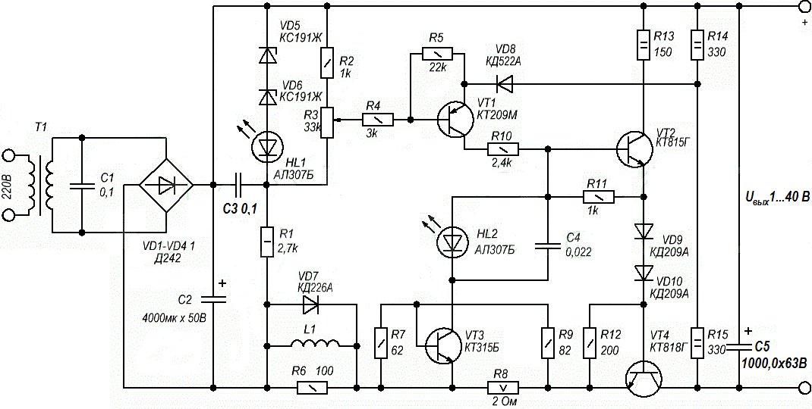

Лабораторный блок питания (1-40 В, 2 А)
Данной лабораторный блок питания не требует настройки, работает в широком диапазоне подводимого переменного напряжения, обладает защитой от перегрузки по току. Выходное напряжение регулируется от 1 В и до величины выпрямленного напряжения со вторичной обмотки трансформатора.

Рис. 1 - Схема лабораторного блока питания
На основе транзистора VT1 составлен модуль сравнения: с бегунка потенциометра R3 на базу VT1 поступает часть образцового напряжения, которое определяется источником образцового напряжения на элементах VD5, VD6, HL1, R1. На эмиттер VT1 поступает входное напряжение делителя на резисторах R14 и R15. В результате сравнения образцового и выходного уровня, сигнал рассогласования попадает на базу транзистора VT2 являющийся усилителем тока, который в свою очередь управляет силовым транзистором VT4.
Работа защиты блока питания
В результате случайного замыкания выходных выводов блока питания или при нагрузки превышающий допустимый предел, повышается падение напряжения на мощном резисторе R8. В результате транзистор VT3 открывается и тем самым замыкает базовую цепь транзистора VT2, ограничивая Iнагр на выходе БП. Визуальным сигналом о перегрузки по току в цепи служит светодиод HL2.
В случае короткого замыкания в лабораторном блоке питания, активация режима ограничения протекающего тока происходит не сразу. Установленный в схему дроссель L1 препятствует стремительному увеличению тока через VT4, а диод VD7 понижает скачок напряжения при неосторожном выключении нагрузки от блока питания.
Если есть необходимость в регулировании тока нагрузки, то можно в разрыв между сопротивлениями R7 и R9 включить переменный резистор сопротивлением 250 Ом, причем движок его нужно подключить к базе VT3. Таким образом, в данном блоке питания будет возможно регулировать от 400 мА до 1,9 А.
Детали лабораторного блока питания
В лабораторном блоке питания допустимо применить любой понижающий трансформатор с Uвых на вторичной обмотке в районе от 9 до 40 В. Единственное, что может потребоваться при низком напряжении на вторичной обмотке, уменьшить номиналы сопротивлений R1, R2, R9, R13-R15 примерно в два раза. А также нужно поставить стабилитроны VD5 и VD6 с другими параметром, чтобы напряжение на резисторе R1 было приблизительно равно половине напряжения на конденсаторе C2.
Дроссель L1 самодельный, намотан на каркасе диаметром 8 мм и содержит 120 витков провода ПЭЛ 0,6 мм.
Транзистор VT1 (КТ209М) можно заменить на КТ502 (с любым буквенным индексом), КТ209(Ж-М), КТ208(Ж-М), КТ3107(А, Б). Вместо транзистора КТ815Г (VT2) можно применить любой серии КТ817 или другой аналогичной структуры с допустимым напряжением коллектор-эмиттер не менее напряжения питания. Транзистор VT4 на КТ809А, КТ808А, КТ803А, КТ829 с максимальным Iк не менее 5 А и максимально допустимым напряжением коллектор-эмиттер превышающим напряжения на выходе вторичной обмотки трансформатора. Транзисторы VT2 и VT4 необходимо разместить на теплоотводах.
Диоды VD1-VD4 могут быть любыми выпрямительными с максимальным обратным напряжением больше напряжения вторичной обмотки и максимальным прямым током более 5 А. Светодиоды можно применить любого типа.
Узел ограничения тока нагрузки лабораторного блока питания можно улучшить. Для этого необходимо убрать сопротивление R7, а вместо постоянного резистора R8 установить переменный. Его сопротивление подбирают так, чтобы при наименьшем токе ограничения падение напряжения на этом резисторе было примерно 0,6 В. Рабочий ток резистора должен быть не менее максимального тока ограничения Imax, поэтому его мощность Р следует определить по формуле:
P=2·Imax·R8.
Например, для интервала тока ограничения от 0,2 до 2 А сопротивление переменного резистора должно быть 3 Ом, а мощность не менее 12 Вт.
Источники
joyta.ru - Самодельный лабораторный блок питания. Схема и описание